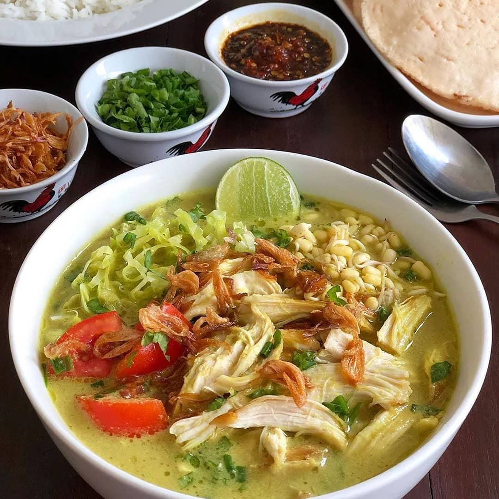
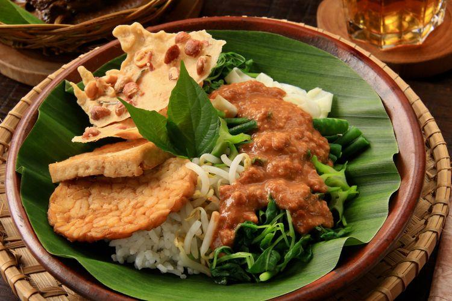

Soto Ayam
Makanan Berkuah
Soto ayam adalah makanan khas Indonesia yang berupa sejenis sup ayam
dengan kuah yang berwarna kekuningan. Warna kuning ini dikarenakan oleh kunyit yang digunakan
sebagai bumbu. Soto ayam banyak ditemukan di daerah-daerah di Indonesia dan Singapura.

Nasi Pecel
Makanan dengan bumbu kacang
Pecel atau pecal merupakan makanan berasal dari pulau Jawa, makanan ini biasanya dihidangkan
dengan bumbu sambal kacang sebagai bahan utamanya dan dicampur dengan aneka jenis sayuran.
Makanan ini populer terutama di wilayah DI Yogyakarta, Jawa Tengah, dan Jawa Timur.